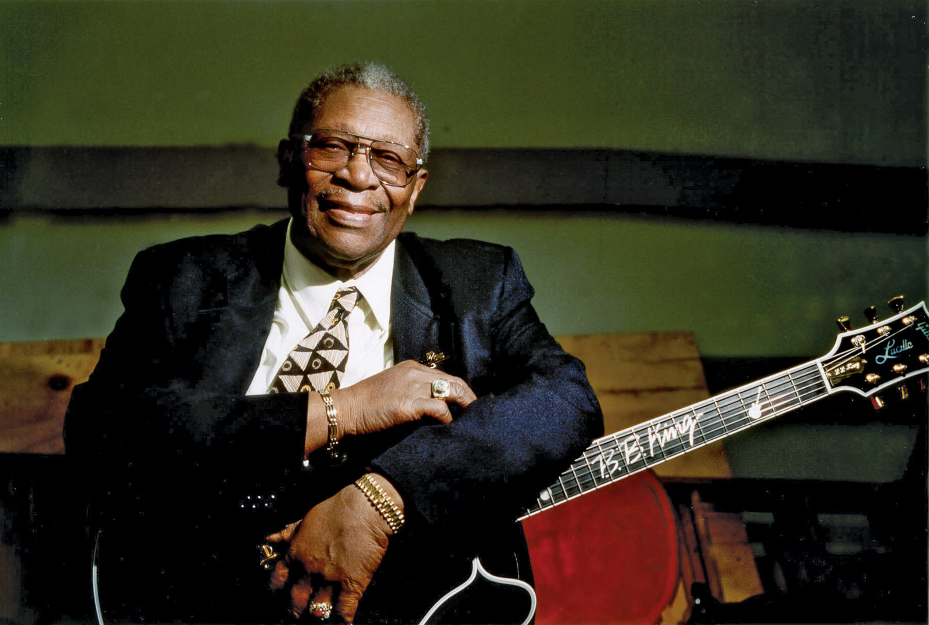

B.B. King
The King of the Blues

B.B. King with his famous guitar, Lucille
Timeline of B.B. King's Life:
- 1925 - Born in Berclair, MS
- 1948 - Performs on Sonny Boy Williamson's West Memphis radio program
- 1949 - Debuts single "Miss Martha King" on Bullet Records
- 1949 - Begins recording for Modern subsidiary RPM Records in LA
- 1952 - "3 O'Clock Blues" becomes King's first Billboard R&B Number 1
- 1962 - Signs to ABC-Paramount Records (later absorbed by MCA Records then Geffen Records)
- 1964 - Records "Live at the Regal," which some consider his best recording ever
- 1970 - Wins Grammy Award for "The Thrill Is Gone"
- 1980 - Inducted into Blues Hall of Fame
- 1987 - Inducted into Rock and Roll Hall of Fame
- 2014 - Inducted into National Rhythm & Blues Hall of Fame
- 2015 - Dies at the age of 89
To read more about the Blues legend, click here.